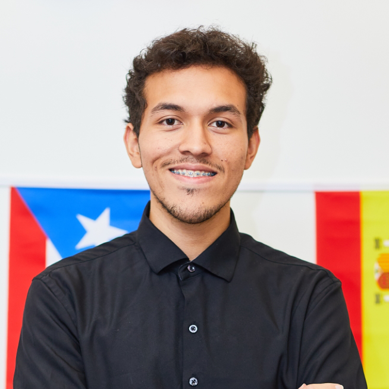

Cristian Montesinos Melara

About Me
Aspiring engineer and experienced Coding Coach with
expertise in Python, C#, and LUA, dedicated to learn
more about technology education. Proven leadership
in developing and implementing coding curricula,
with a strong foundation in digital design, game
development, and IT management. Currently pursuing
an Associate's degree in Engineering to advance
technological innovation skills.
Education
Durham Technical Community College
Pursuing Associate's Degree in Engineering
-
Durham School of the Arts
High School Diploma
Work Experience
Coding Coach, CodeWiz Durham
Mentor children weekly, teaching coding
skills and critical thinking through hands-on
projects and personalized curriculums.
Have conducted many coding camps, from 3D Printing and Modeling,
to Gamde Development using Roblox Studio.
-
Ambassador / Organizer for Durham School of the Arts Fall Art Festival
Managed the Festival’s Instagram page, successfully
engaging with the community and increasing
online followers.
Designed the Festival’s branding, including custom
T-shirt designs and the official logo, enhancing the
event’s visual identity.
Coordinated with various departments and
volunteers, ensuring seamless execution of the
event.
Was the emcee for this most recent festival in 2024.
Internships
Duke Math Outreach Program Intern
Collaborated with Dr. Kirsten Wickelgren, a Duke
University Math Professor, to conduct research
using Singular Value Decomposition to predict
variable correlations.
Utilized Python to develop a data analysis system
that aided in deriving meaningful supporting
evidence from complex data sets.
-
Triangle Ecycling Internship
Acquired hands-on skills in computer repair,
troubleshooting, and data recovery under
professional mentorship.
Certifications and Awards
-
Autodesk Certified User
Proficient in Autodesk 3ds Max (modeling, rigging, lighting, rendering)
-
National Hispanic Recognition Program
College Board, 08/2024
Recognized for academic excellence and leadership within the Hispanic community
Technical Knowledge
- Python
- Roblox Studio
- Autodesk 3ds Max
- Unreal Engine
- Blockbench
- Unity
- HTML/CSS
- JavaScript
- Adobe Creative Suite
Languages Fluent In:
Extracurriculars
-
LatinxEd Fellowship
Led presentations to promote inclusive education
and developed leadership skills within the Latinx
community.
-
Game Dev VSL-Esports Competition Team
Came in second in fall season.
Contact Me